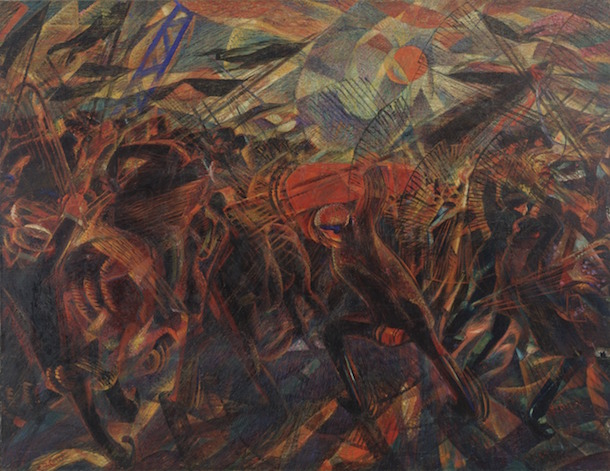

Futurismo
por Zamara Castro

Blue Dancer, de Gino Severini
Blue Dancer, de Gino Severini
Centrándose en el progreso y la modernidad, los futuristas buscaban barrer las nociones artísticas tradicionales y reemplazarlas con una celebración enérgica de la era de la máquina. Se enfocaron en crear una visión única y dinámica del futuro, e incorporaron representaciones de paisajes urbanos y nuevas tecnologías como trenes, automóviles y aviones en sus obras. La velocidad, la violencia y las clases trabajadoras fueron glorificadas por el grupo como formas de impulsar el cambio, y su trabajo abarcó una amplia variedad de formas de arte, incluyendo arquitectura, escultura, literatura, teatro, música e incluso gastronomía.
El futurismo fue inventado y se desarrolló principalmente en Italia, liderado por el carismático poeta Marinetti. El grupo fue más influyente y activo entre 1909 y 1914, pero fue reiniciado por Marinetti después del final de la Primera Guerra Mundial. Este renacimiento atrajo a nuevos artistas y se conoció como el futurismo de segunda generación. Aunque más prominente en Italia, las ideas futuristas fueron utilizadas por artistas en Gran Bretaña (influyendo en el Vorticismo), Estados Unidos y Japón, y las obras futuristas se exhibieron en toda Europa. El futurismo ruso se considera generalmente un movimiento separado, aunque algunos futuristas rusos se relacionaron con el movimiento italiano anterior. El futurismo anticipó la estética del Art Deco y también influyó en el dadaísmo y el expresionismo alemán.

Formas únicas de continuidad en el espacio, de Umberto Boccioni
Un enfoque clave de los futuristas fue la representación del movimiento o dinamismo. El grupo desarrolló varias técnicas novedosas para expresar la velocidad y el movimiento, incluyendo el difuminado, la repetición y el uso de líneas de fuerza. Este último método se adaptó del trabajo de los cubistas y la inclusión de estas líneas se convirtió en una característica de las imágenes futuristas.
Los futuristas publicaron una gran cantidad de manifiestos diferentes, utilizando estos para transmitir sus ideales estéticos, políticos y sociales. Aunque tanto los realistas como los simbolistas habían producido documentos similares anteriormente, la magnitud con la que los futuristas crearon y difundieron sus manifiestos fue sin precedentes, lo que les permitió transmitir sus ideas a un público más amplio. Para ayudarlos logísticamente con su distribución, el grupo hizo uso de algunas de las nuevas tecnologías que representaban en su arte, incluyendo avances en los medios de comunicación masiva, la impresión y el transporte.
Muchos futuristas italianos apoyaron el fascismo y se pueden establecer paralelismos entre los dos movimientos. Al igual que los fascistas, los futuristas eran fuertemente patrióticos, se emocionaban con la violencia y se oponían a la democracia parlamentaria. Cuando Mussolini llegó al poder en 1922, el futurismo obtuvo un reconocimiento oficial, pero más tarde esto afectó negativamente a muchos de los artistas, ya que se vieron contaminados por la asociación.
Funeral del anarquista Galli, de Carlo Carrà